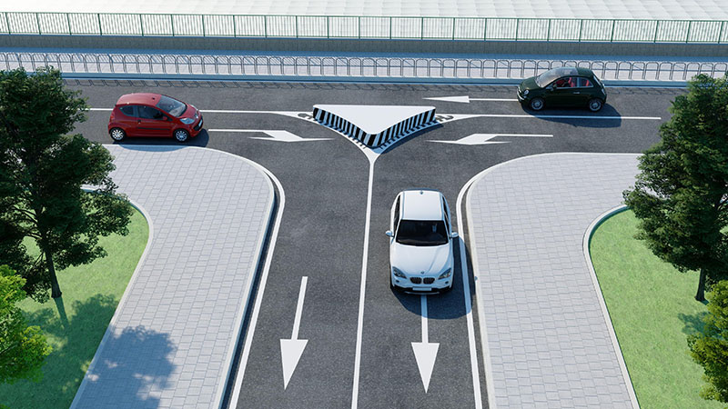

Isola di traffico e salvagente

Isola di traffico
E' una parte della carreggiata (e quindi della strada), evidenziata mediante zebrature oblique di colore bianco e delimitata da strisce bianche continue di raccordo.Serve a facilitare l'incanalamento dei veicoli verso varie direzioni.
Può essere:
- a raso: dipinta sul piano stradale
- in rilievo (rialzata): preceduta da zebrature oblicque di colore bianco
Salvagente
Il salvagente è una parte della strada rialzata, destinata al riparo o alla sosta dei pedoni che attraversano la strada stessa, in corrispondenza di attraversamenti pedonali o di fermate dei veicoli per trasporti pubblici.Facilita la salita e la discesa dei passeggeri da tram, filobus o autobus e può essere segnalato da colonnine luminose a luce gialla fissa.